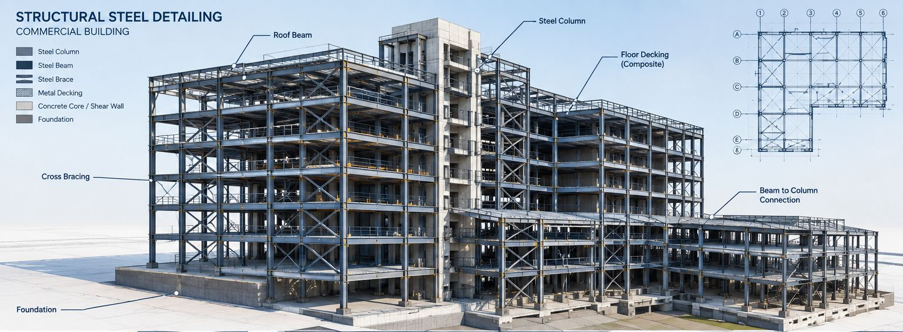

Services
Steel detailing that keeps your shop moving
From the first model to the last field bolt, Apex Steel Designs gives fabricators accurate drawings, fast turnaround, and a US project manager who answers the phone. We detail in both Tekla Structures and SDS/2, design connections in-house, and check every drawing twice before it reaches your shop.

Structural steel detailing
Complete 3D modeling and drawing production for your steel packages, in Tekla Structures or SDS/2 — your choice of platform. We produce approval and erection drawings, shop and single-part drawings, anchor bolt setting plans, embed plans, advance bills of material, and bolt reports.
We output the files your equipment reads — CNC/NC, DXF, KSS, and XSR for FabSuite, Fabtrol, and your beam line — and we send sample files up front so you can test machine compatibility before you commit. Every job follows your shop standards and the applicable AISC, NISD, SJI, AWS, IBC, and OSHA requirements.
Miscellaneous steel detailing
The stairs, rails, and metals packages that ride alongside your main scope. We detail pan, grating, and curved stairs; handrails and guardrails; ladders; door, window, and lintel framing; platforms; RTU frames; dock leveler frames; trash enclosures; and more.
Joist and deck detailing
Joist detailing to SJI standards — K-series, LH and DLH series, and special profiles — plus roof, composite, cellular, form, and dovetail deck, with placement drawings, accessories, and connection details.
It is handled by the same integrated team that does your connection design, so you have one partner for the full package.
Connection design
In-house connection design using IDEA StatiCa, with stamped and sealed calculations and clear mapping plans. Our engineers are registered in all 50 states, so your calcs can be sealed wherever the job is. We handle shear, moment, and brace connections, from simple shear to high-seismic.
Our calc packages are written to be easy for your EOR and your shop to review, and we provide job set-up drawings of typical connections so you can match them to your shop standards and equipment. When a field issue needs a calculation, we help resolve it. Because detailing and connection design sit with one integrated team, you get faster delivery and fewer RFIs.
Estimating and estimodeling
Win more bids with faster, more accurate numbers. We model steel from your bid drawings, pull material take-offs straight from the 3D model, break out miscellaneous steel separately, and export to FabSuite and Fabtrol — plus a 3D PDF of the model you can use in your bid presentation.
BIM services
Scan-to-BIM for renovation and retrofit work, turning point-cloud data into an accurate 3D model. Clash detection and clash reports across structural, mechanical, and electrical. IFC workflows and model snippets to keep coordination moving. We also attend your BIM coordination meetings, so our model is combined with the other trades in one place.
Project management, design assist, and design build
Need more than drawings? We support projects from pre-construction through erection — pre-construction modeling, design assist, design build, and hands-on project management — so your team has one accountable partner across the phases of the job.
Checking and quality control
Independent checkers review every model and drawing — in the model and on paper. We keep check prints until the project is erected and make them available on request. It’s how we catch problems before they reach your shop floor or the field.
Consultations and Help Desk
Every consultation starts free
Send us a drawing set, a model, or a single question, and our team reviews it and returns written guidance, typically within 24 to 48 hours. You hear back from us the same business day.
We consult on
- Connection design
- Value engineering
- BIM and coordination
- Shop drawing checks and constructability
- Detailing scope
Sectors we serve
Three sector groups
Commercial & institutional
Offices, schools and universities, hospitals, churches, malls, museums, hospitality, data centers, and multi-family.
Industrial
Petrochemical, power, chemical, food processing, and cement plants.
Transportation & public
Bridges, airports, and stadiums.
How we work — phase by phase
You always know what comes next
Pre-bid
Estimodeling, take-offs, 3D PDF.
Pre-detailing
Kick-off, start-up questions, checklist, job set-up drawings.
Detailing
Model, RFIs, approval drawings.
Approval
We incorporate EOR and architect comments, typically within one week of receiving returns.
Fabrication
Shop drawings, CNC files, reports.
Erection
Erection drawings, field bolt lists, and field support.
As a reference point, a 500-ton package typically takes four to five weeks, depending on complexity, and revisions come back within about a week of approval returns.
Our commitments on every job
What clients say
Stairs, rails, and the work around them
Deepender and his team has done a number of jobs for me, mostly stairs and railings. I find his work to be very accurate, on time and very neatly presented. He’s always on top of the project and a good team member.Michael F. Pelliccio · NISD Membership Committee
TBD: newer fabricator testimonial — name, title, company, city
Let's talk about your next project.
Send us your drawings and get a free consultation from a US-based project manager.